Firefighter robot: progress report
This report collects one night of work on the parts of the project outside vision. Marc works on fire detection, so this work stops at the interface to his detector. Every result here comes from simulation, CAD or research. The status words are: built, tested in simulation, measured on laptop, measured on board, planned.
The code and files are in the repository folders named in each section. Nothing is committed yet.
1 Summary
| Work package | Status | Main result | Folder |
|---|---|---|---|
| Payload on the legs | tested in simulation | Heavy parts belong behind the torso. A and D sit at the 6 Nm policy limit; C is above it. | sim/payload |
| Our walking policy with payload | tested in simulation | Trained in 37 min on the RTX 3090 with 0 to 2.5 kg. Walks at 0.3 m/s with no fall. Under pushes at 6 Nm, 29 to 61 % of episodes end in a fall; at 20 Nm, 1 to 10 %. | sim/rl |
| Official policy with our payloads | tested in simulation | The shipped Berkeley policy walks with every payload at 6 Nm. It cannot turn on the spot. In a closed-loop test with our aiming code, concept A walked to a fire and put it out. | sim/sim2sim |
| Pan-tilt module for A | planned (CAD done) | 8 printable parts, STEP and STL, 375 g at 40 % infill. Bolts to the 2020 rails of the torso. | cad/parts |
| Splash guard and backpack | planned (CAD done) | 7 printable parts. Backpack with a 1 L bottle and a 12 V pump: 2.3 kg full. Needs a knee limit of 1.4 rad, or the lower leg can touch it. | cad/backpack |
| Aiming code | tested in simulation | Interface for Marc's detector, fire position, jet aim, spray logic, UDP runtime. 26 tests pass. | aim |
| Camera study | tested in simulation | Camera poses that see the floor from about 0.8 m to 5 m without the gun in view. Pixel size of a fire per sensor. | cad/camera_views |
| Parts, power and wiring | planned | Parts for A cost about 73,000 KRW + 49 USD without cameras. Power comes from the 24 V robot bus through a fuse, an e-stop relay and a 12 V converter. | docs/hardware |
| Walking on the real robot | planned | How the Berkeley team trains and deploys its policy, and how our walk command can replace their gamepad. | docs/locomotion |
2 Can the legs carry the payload?
We built MuJoCo models of the Berkeley Humanoid Lite with the payload of each concept. We then computed the joint torques in three slow poses: standing, crouching and standing on one leg. One-leg stance happens during every step. We compared the torques with two limits. The walking policy was trained with 6 Nm. The motors in the model allow 20 Nm.
- No concept reaches 20 Nm in any pose. The smallest margin is 7.6 Nm, for C.
- A (5.9 Nm) and D (6.0 Nm) sit at the 6 Nm limit in one-leg stance. C reaches 11.6 to 12.3 Nm. B and E stay below the limit.
- The standing pose leans the torso forward. Mass behind the torso (x = −0.10 to −0.15 m) costs much less torque than mass in front. Height matters little.
- Budget: about 2 kg on the torso top, or about 5.5 kg at the backpack position, before the pitch joints reach 6 Nm.
- For concept A, the simulation recommends the pan axis at x = −0.06 m, with the gun's centre of mass close to the axis. At that position the worst pitch torque is 5.6 to 6.0 Nm.
- With the masses and positions of the real CAD parts (sections 5 and 6), the worst pitch torque drops to 5.2 Nm for A (5.5 Nm with the gun turned 90°). For B it is 3.9 Nm with a full bottle and 4.4 Nm with an empty one.
- Plain joint stiffness at the policy gains (kp 20, kd 2) does not keep the robot up, even without payload. The walking policy must provide the balance.
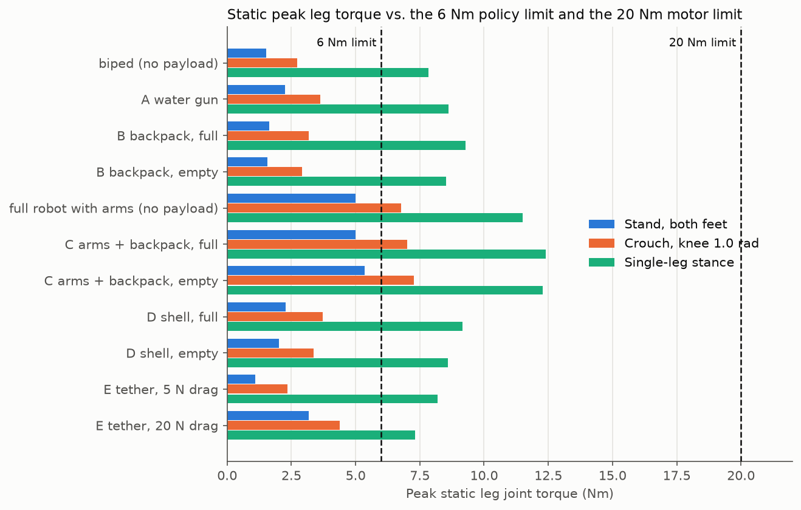
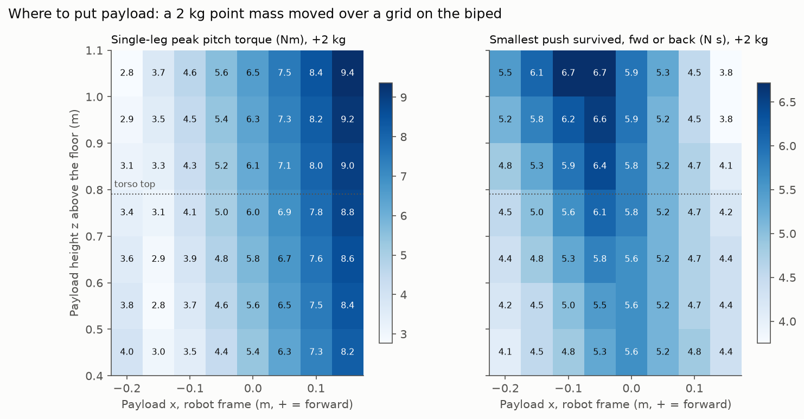
The one-leg values are an upper bound. The real gait sways sideways and keeps each foot on the ground for a short time only. The walking check (section 3) must confirm the numbers.
3 Our walking policy with a payload
We trained our own walking policy on the RTX 3090 with MuJoCo Playground. It reuses the Playground "Berkeley Humanoid joystick" task: the robot follows a speed and turn command. During training, a payload of 0 to 2.5 kg sits on the torso, and its centre of mass moves by up to ±3 cm. Each run of 121 million steps took 37 minutes.
- In 24 test cases (64 robots, 10 s, no pushes), no robot fell. Asked for 0.3 m/s, the robot walked at 0.29 to 0.31 m/s with 0, 1.5 and 2.5 kg, and with the concept A payload.
- Asked to turn at 0.5 rad/s, the policy with a 6 Nm limit turned at 0.38 to 0.40 rad/s. With a 20 Nm limit it turned at 0.47 to 0.49 rad/s.
- With random pushes (the same pushes as in training), many episodes end in a fall at 6 Nm. More torque helps most. A second 6 Nm run with 0 to 3.5 kg, ±5 cm and a knee limit of 1.4 rad did not help, and it turns more slowly (0.24 to 0.27 rad/s).
| Policy | Falls with pushes, 0 kg | 1.5 kg | 3.5 kg |
|---|---|---|---|
| 6 Nm, payload 0–2.5 kg | 29 % | 42 % | 59 % |
| 20 Nm, payload 0–2.5 kg | 1 % | 3 % | 10 % |
| 6 Nm, payload 0–3.5 kg, knee ≤ 1.4 rad | 43 % | 48 % | 61 % |
Without pushes, all three policies walk at 0.28 to 0.30 m/s with 0 to 2 % falls. The torque limit matters more than the training ranges. We must find out how much torque the real motors give for a long time without overheating.
- The Berkeley action scale (0.25) gave a policy that only stood. We used the Playground value (0.5). This is a difference from the Berkeley setup.
- Not done: push tests in the evaluation, rough ground, concepts B to E, a motor and delay model, export to ONNX, and any test on the robot. Nobody has checked that the real motors give 20 Nm.
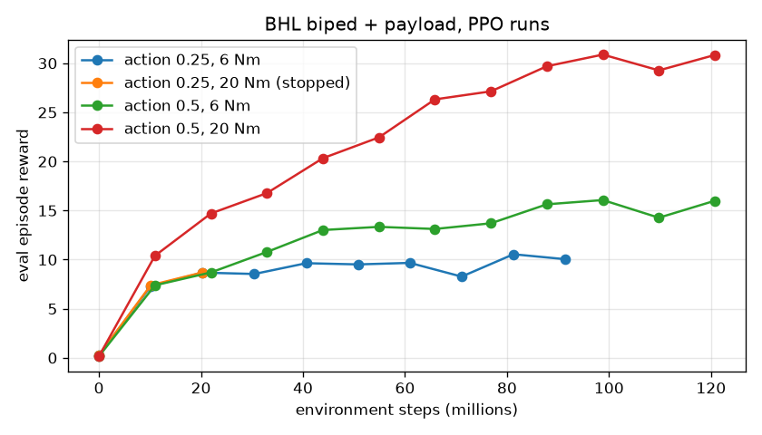
4 The official walking policy with our payloads
The Berkeley team ships trained walking policies. We ran their policy file (policy_biped_25hz_a.onnx) in our own MuJoCo loop, with the payload models from section 2. Each test lasted 20 s. The simulation has no motor model, no delay and no IMU error, so the real robot will do worse.
- At the 6 Nm torque limit, no model fell in any test, including B with a full tank. Forward speed reached 0.28 to 0.30 m/s of the 0.3 m/s asked, but only 0.16 m/s for B with a full tank.
- At 4 Nm, the limit in their Python robot runtime, B with a full tank fell in under 1 s. A, D, E and B empty fell in some walking tests. We must run the robot at 6 Nm or more.
- The policy does not turn on the spot. A turn command of 0.5 rad/s without forward speed gave at most 0.06 rad/s. With 0.2 m/s forward, the turn worked (0.49 to 0.54 rad/s). The cause is their training reward.
- Without sensor noise, the policy sometimes stands still on a walk command. With the training noise added, it walks in every 6 Nm test.
We changed the aiming code: it now walks a small arc when it must turn, and it turns the pan-tilt instead of the body when it aims.
Closed-loop test: detection, walking and aiming together
We then joined the parts in one MuJoCo run: the official policy at 6 Nm, the aiming code from section 7 and concept A. A fire sat on the floor 2.9 m away and 31° to the left. A virtual camera on the gun produced noisy detections at 10 Hz. The aiming code sent walk commands to the policy and aimed the jet.
- The robot reached the spray state at 11.9 s, about 1.9 m from the fire. The fire went out after 3.3 s of spraying. The robot did not fall.
- From 5 to 11 s the robot stood still, although the aiming code asked for 0.2 m/s. A separate test showed that the policy walks reliably only at 0.25 m/s or faster. We raised the minimum walking speed in the aiming code to 0.25 m/s.
- With the masses of the real CAD parts and the fire 2 m behind and 1.5 m to the right, the robot searched in an arc, sprayed at 15.3 s and put the fire out. It did not fall.
- On the real-CAD models, A walks at 0.23 m/s for a 0.25 m/s command. B with a full bottle walks at only 0.11 to 0.14 m/s. B needs a retrained policy.
- The pan-tilt is simulated without joints, so the gun does not turn in the video.
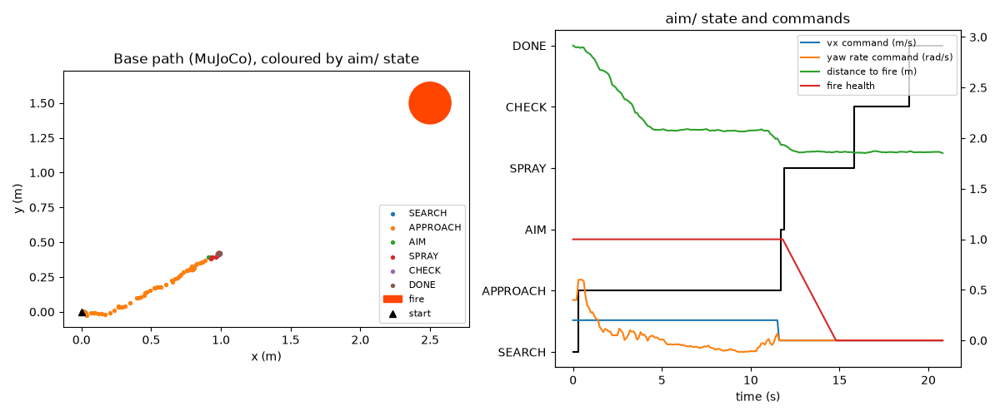
5 Pan-tilt module for concept A
This is the first set of real parts. The module carries the water gun now. The same hole pattern (4 × M4 on a 40 mm square) can later take the camera head of B or the valve of E.
- The torso top has two 2020 aluminium rails at x = ±60 mm, with their top face at z = 0.791 m. We measured them on the Berkeley mesh.
- The deck bolts to these rails with 4 M5 screws and drop-in T-nuts.
- The pan axis turns on a 6808 bearing, so the servo does not carry the load. The tilt has a servo horn on one side and an M8 pin in a 608 bearing on the other side.
- Servos: standard 40 × 20 mm hobby servos (DS3218 class).
- 8 printed parts, about 375 g at 40 % infill. With the gun, the module weighs about 1.46 kg.
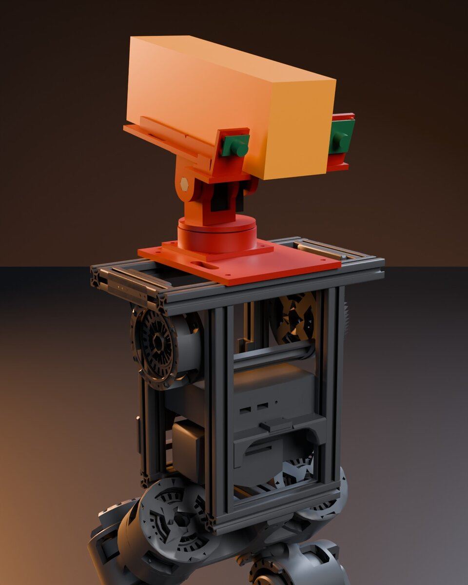
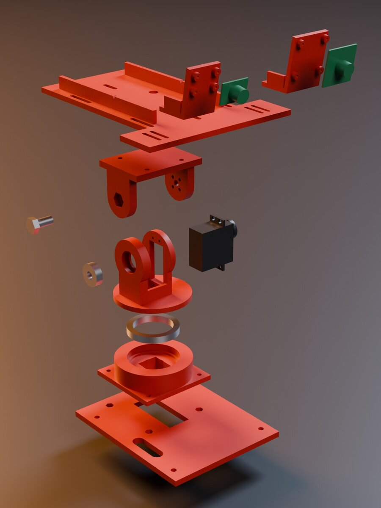
Second round: real servo sizes, camera mount, adapters for B and E
- The servo and horn sizes now follow the DS3218 and RJX3366 horn drawings. The README cites the sources.
- The pan axis stays at x = −38 mm. Further back, the servo would hit the rear rail. Instead, the gun sits so that its centre of mass is at x = −60 mm, 22 mm behind the tilt axis. This is the position that the payload simulation recommends.
- The USB camera sits on the right of the gun, pitched 16° down. The nearest visible floor is then about 0.8 m.
- Head for B: RGB and thermal boards side by side, pitched 15° down, with the nozzle 62 mm lower and centred under them. Valve holder for E: a cradle for the Adafruit 997 solenoid valve with a nozzle holder in front.
- Print plan: concept A needs 3 print jobs on a 220 × 220 mm bed, about 375 g of PLA.
- Second version for ST3215 bus servos (section 9): a new pan base, yoke and tilt bracket that grip the servo horns. The deck, payload plate and camera brackets stay the same. The printed mass drops from 369 g to 312 g. Three small values (screw threads, one hole spacing) are still guesses.
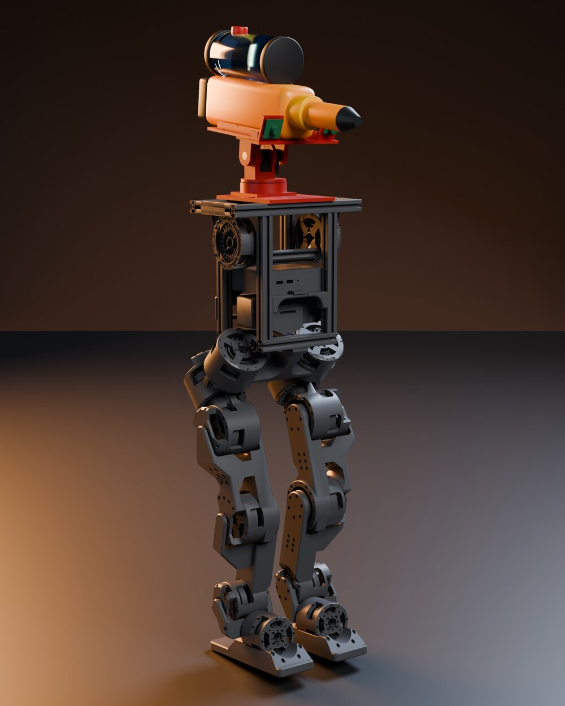
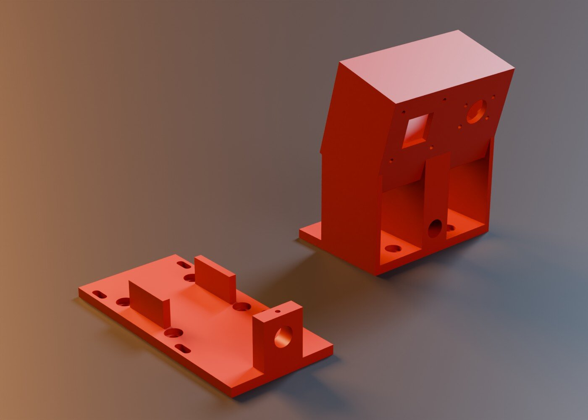
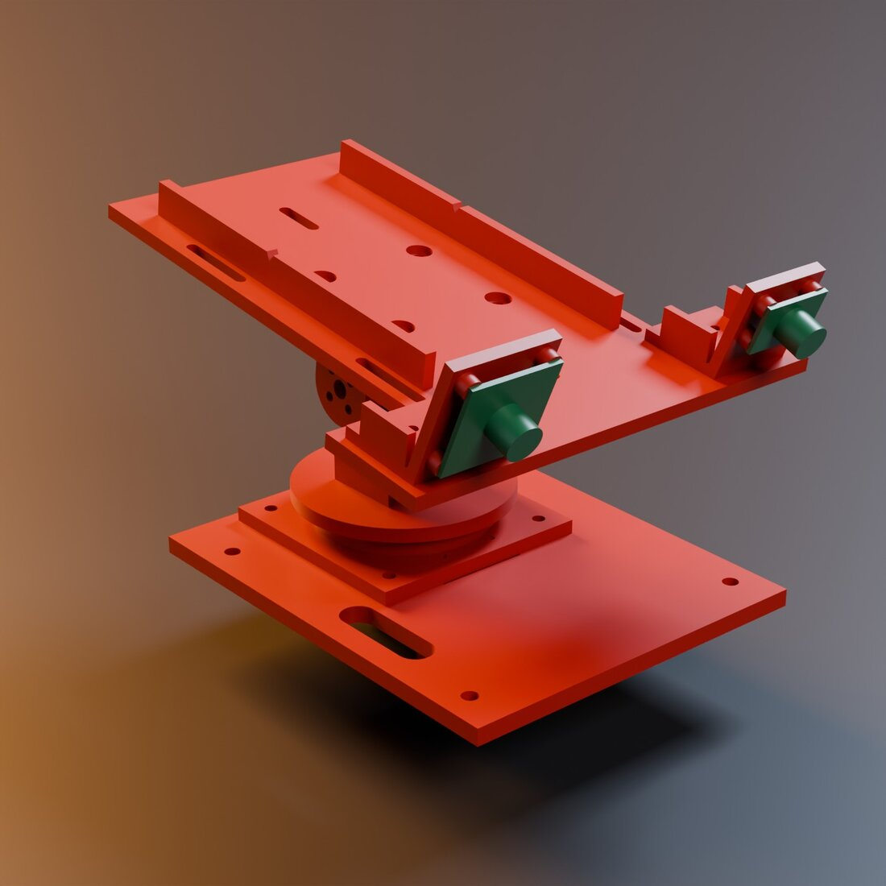
6 Splash guard and backpack
The splash guard protects the torso electronics from water, for every concept. The backpack is the water system of concept B.
- The torso frame is 2020 extrusion. Its front face is at x = +70 mm and its rear face at x = −70 mm.
- Splash guard: two panels with drip lips, vents under a hood and a covered cable slot. They bolt on with 8 M5 T-nuts and weigh about 91 g.
- Backpack: two T-nut brackets, a plate, a strapped cradle for a 1 L Nalgene wide-mouth bottle (89 × 210 mm) and a bracket for a Seaflo 21-series 12 V pump. It weighs about 1.37 kg empty and 2.32 kg with water.
- The splash guard stays at least 34 mm from the legs over the full joint range.
- Over the full joint range, the lower leg can touch the backpack: for example at hip pitch +0.98 rad with the knee at 2.04 rad. No single CAD change fixes this. A software knee limit of 1.4 rad keeps at least 23 mm. The walking policy must respect this limit, or the backpack must move.
- The bottle and pump sizes come from a shop listing and the maker's brochure. We have not measured them.
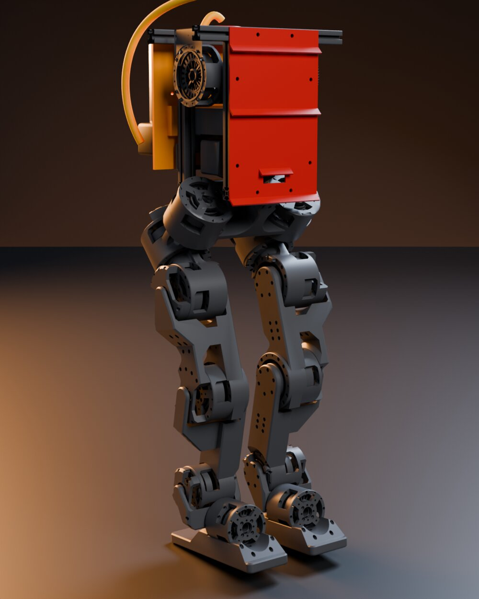
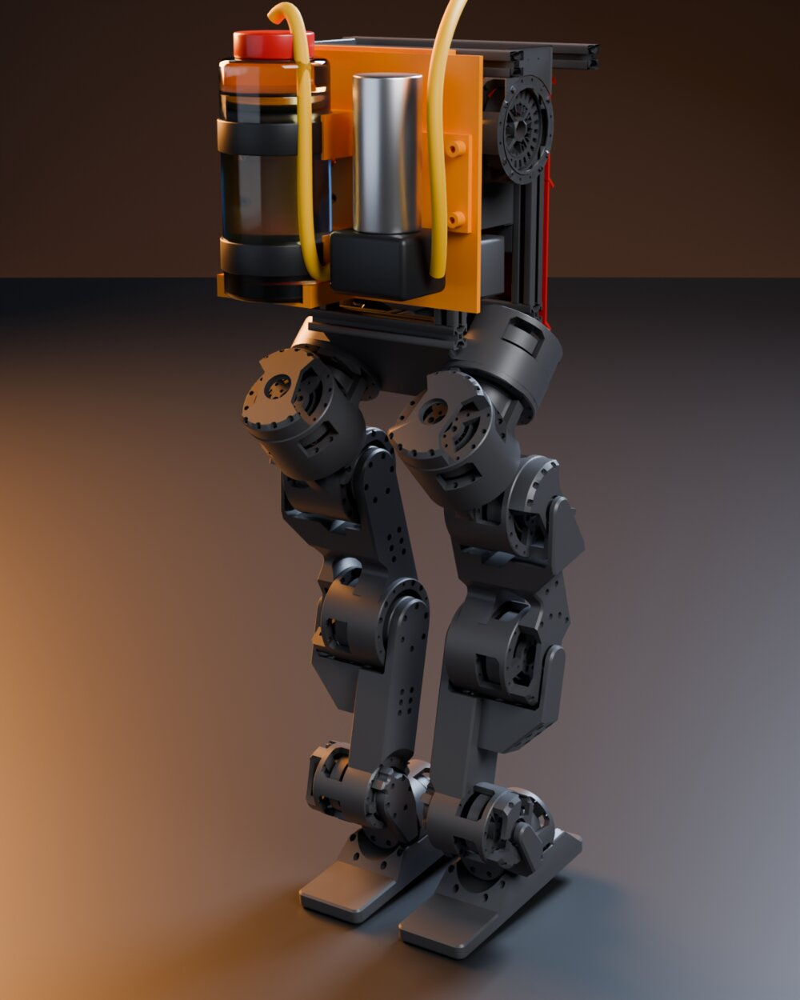
7 Aiming code: from a detection to a water jet
This code starts where Marc's detector stops. It finds the fire on the floor, turns the robot toward it, walks closer, aims the jet and decides when to spray. It runs as one process and talks over UDP, a simple local network protocol.
Interface proposal for Marc
The detector sends one JSON line per fire and frame to 127.0.0.1:5600:
{"timestamp": 12345.678, "camera": "rgb", "u": 331.5, "v": 298.0,
"bbox": [310, 280, 352, 316], "confidence": 0.87,
"max_temp_c": null, "depth_m": null}
The timestamp is time.monotonic() on the robot computer at the time the image was taken. The detector sends nothing when it sees no fire. The commands go out as JSON lines: pan, tilt and pump to the actuator driver, and walk speed and turn rate to the walking policy.
Questions for Marc:
- Does the detector correct the lens distortion?
- Which point is (u, v): the box centre, the hottest pixel or the base of the flame? The code assumes the fire touches the floor at (u, v).
- Which cameras, image sizes and fields of view do you use?
- What frame rate and delay does the detector have?
What the code does
- States: search, approach, aim, spray, check, done. It sprays only with a recent, confident detection inside the jet range.
- A small Kalman filter smooths the fire position and rejects outliers.
- The jet solver allows for the nozzle offset and, if wanted, air drag. It takes 0.35 ms with drag and 0.07 ms without (measured on laptop).
- It uses the pan and tilt angles at the time the image was taken, so a 100 ms delay gives an error of 0.25 mm instead of 9 cm.
- You can test the pipe without a camera:
send_test_detections.pyreplays fake detections intorun.py. - The official walking policy cannot turn on the spot (section 4). So every body turn now has a forward speed of at least 0.2 m/s. Once the fire is in range, only the pan-tilt turns, up to 90° each side. Closer than 0.7 m, the robot steps back.
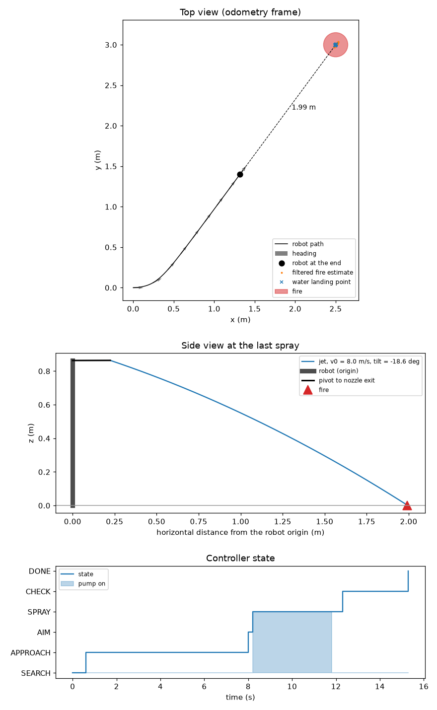
8 What the cameras see
We rendered the view of each robot camera in a test room with fires at 1, 2, 3 and 5 m. We also computed how many pixels a 20 cm fire covers for each sensor. These results help Marc choose; they do not choose for him.
- At the first CAD positions, the gun or nozzle hid part of the image, and the floor closer than 2 to 2.6 m was out of view.
- With a 90° camera, small moves fix this. On A, the lens goes 4 cm to the side and 8 cm down, pitched 16° down: the floor is visible from 0.81 m. On B, the nozzle goes 5 cm lower, under the head. On E, the lens moves 4 cm on the pod, pitched 14° down.
- No 60° camera reaches the goal: its nearest visible floor is 0.87 to 1.00 m.
- A 20 cm fire covers fewer than 3 × 3 pixels on the MLX90640 from 1 m (wide lens) or 3 m (narrow lens). The Lepton 3.5 and the 256 × 192 USB thermal camera stay above 3 × 3 pixels up to 8 m. The 3 × 3 limit is a rule of thumb, not a measured limit.
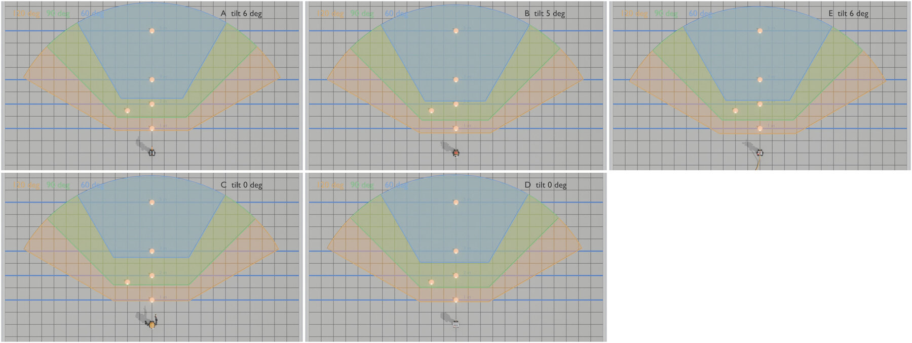
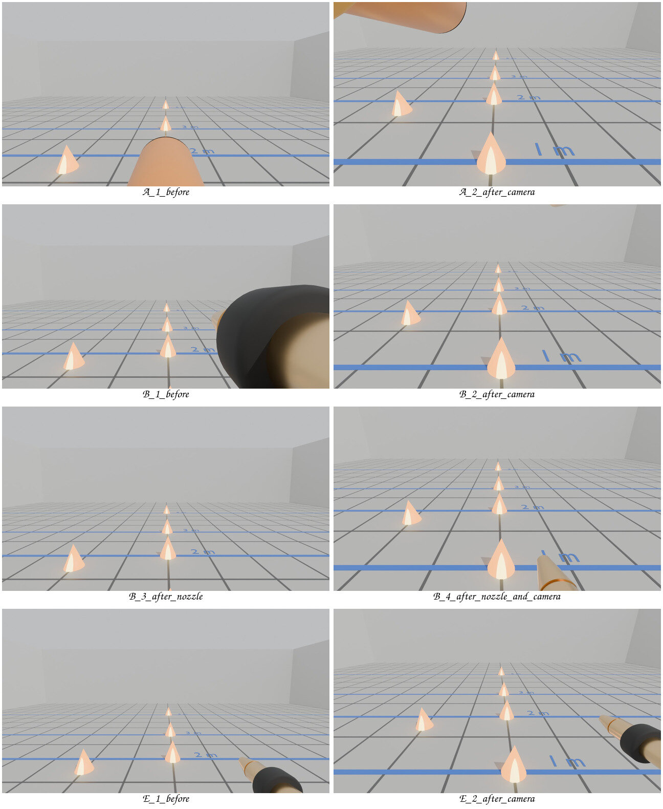
9 Parts, power and wiring
We researched the parts, the robot's power system and the water jet. Every price has a link and an access date in docs/hardware/. Prices change. Some small parts have no price yet. Most Devicemart prices were read only once: the site refused all connections from 23:44 to 00:18 KST, so nobody could check them again.
Robot power
- The Berkeley robot runs on a 6S 4000 mAh LiPo battery (about 89 Wh) with a 24 V bus. The sources give about 30 minutes of runtime.
- Its 22 motors sit on four CAN buses at 1 Mbit/s. An Intel N95 mini PC runs the policy.
- The plan taps the 24 V bus after the robot's main switch, through our own 10 A fuse, a power relay and a 24 V to 12 V, 10 A converter. The e-stop opens the relay coil and cuts all add-on power. It does not stop the leg motors.
Cost and main choices
| Concept | Parts in KRW | Parts in USD | Not included |
|---|---|---|---|
| A | 73,310 | 48.97 | cameras, shipping |
| B | 129,308 | 48.97 | cameras, shipping |
| E | 121,424 | 48.97 | cameras, shipping, outside pump |
- Servos: the research suggests two Feetech ST3215 serial bus servos at 12 V. They report their position and load. The CAD in section 5 was drawn for DS3218-class hobby servos; the team must choose one type.
- Switching: a 2-channel relay module on a Raspberry Pi Pico fires the gun (A) or switches the pump (B) or valve (E).
- Gun for the first test: the 5,000 KRW Daiso water gun. Its tank holds only about 100 mL, so a larger gun is better for a demonstration.
Water jet
With the Seaflo pump (3.8 L/min, 0.28 MPa) and a 2 mm nozzle, the estimate is 2.55 L/min at 13.6 m/s. Without air drag that gives 16 to 19 m of range. The real range is much shorter, and we must measure it. The recoil on the robot is under 1.3 N.
Cameras (for Marc, no choice made)
The README compares 8 thermal and 8 RGB or depth cameras. Only the InfiRay P2 Pro and the Topdon TC001 (256 × 192) give 25 Hz thermal video over plain USB video (UVC). The FLIR Lepton 3.5 runs at under 9 Hz because of export rules. The MLX90640 costs about 88,000 KRW but has only 32 × 24 pixels.
Wiring for concept A
flowchart LR
subgraph PWR["Add-on power"]
BUS["BHL 24 V bus, 6S LiPo<br/>after main switch and breaker"] --> F1["Fuse 10 A<br/>at the XT30 tap"]
F1 --> K1["Power relay K1<br/>contact, 40 A"]
F1 --> ES1["E-stop contact 1<br/>NC, latching"]
ES1 --> K1C["K1 coil, 24 V"]
K1 --> DC1["DC-DC buck<br/>24 V to 12 V, 10 A"]
end
subgraph SIG["Signals"]
PC["Robot computer<br/>BHL N95 mini PC"] -->|USB| HUB["Powered USB hub"]
HUB -->|USB| MCU["MCU<br/>Raspberry Pi Pico"]
HUB -->|USB| CAM["USB RGB camera<br/>on the gun"]
end
subgraph PT["Pan-tilt"]
ADP["Bus servo adapter"] -->|"servo bus<br/>12 V + data"| SP["Pan servo ST3215"]
SP -->|daisy chain| ST["Tilt servo ST3215"]
end
subgraph GUN["Water gun, own battery"]
GB["Gun battery"] --> ES2["E-stop contact 2<br/>NC"]
ES2 --> TRG["Gun trigger switch"]
TRG --> GM["Gun pump motor"]
end
DC1 -->|12 V| ADP
HUB -->|USB| ADP
MCU -->|"GPIO 3.3 V<br/>+ 5 V supply"| RLY["Relay module<br/>channel 1"]
RLY -.-|"contact in parallel<br/>with the trigger"| TRG
10 Walking on the real robot
We read the Berkeley code, paper and documentation. We did not run their code.
- Training: Isaac Lab with PPO, task
Velocity-Berkeley-Humanoid-Lite-Biped-v0, 4096 parallel robots, about two hours. The policy has 45 inputs and 12 outputs and runs at 25 Hz. - Their training already adds −1 to +2 kg to the torso. It never moves the centre of mass. We need up to 3.5 kg and a centre-of-mass offset.
- On the robot: an Intel N95 mini PC with Ubuntu 22.04 runs the policy as an ONNX file. The motors talk CAN at 1 Mbit/s through USB-CAN adapters. The joint zeros need a new calibration after each power cycle.
- The walk command comes from a USB gamepad in their Python runtime. A small replacement class can read our UDP command instead, without any edit to their files. It stops the robot after 0.5 s without a message.
- Risk: Isaac Sim 5.1 lists an RTX 4080 on Ubuntu as the minimum. Our training PC has an RTX 3090 on an Arch-based system.
11 Proposed tasks for next week
These are proposals for the meeting. The team decides.
- Choose the concept. We suggest A first. Its top module can later take the head of B or the valve of E.
- Order and print for A. Print the 3 jobs (about 375 g of PLA). Choose the servo type (ST3215 bus servo or DS3218 hobby servo) and order two, a 6808 and a 608 bearing, M5 drop-in T-nuts and the water gun (section 9).
- Vision (Marc). Answer the four interface questions in section 7. Use the pixel table in section 8 to choose the cameras. Send detections to
aim/run.pyon UDP 5600;send_test_detections.pyshows the format. - Walking. Run the official policy at 6 Nm, not 4 Nm. Reproduce their training, then retrain with 0 to 3.5 kg on the torso and a centre-of-mass offset. Decide whether to add a turn-on-the-spot reward.
- Measure. Weigh the gun full and empty and find its centre of mass. Measure the jet speed with the method in
aim/README.md. - Integrate. Write the actuator driver for the chosen servo driver. Write the small bridge that replaces the Berkeley gamepad input (section 10).
- Safety. Print the splash guard. Add an emergency stop before the first test with water.
Open questions
- Which computer runs the detector and the aiming code: the robot's N95 mini PC or a laptop over Wi-Fi?
- Where is the robot battery, and can it move back? The payload simulation shows that moving it back saves 0.6 to 0.7 Nm.
- Can we train with Isaac Sim on our RTX 3090 and Arch-based system, or do we need another machine?
Notes
The Berkeley Humanoid Lite models and meshes come from HybridRobotics/berkeley-humanoid-lite-assets (CC BY-SA 4.0). All masses of added parts are estimates. Every folder has a README with the method, the commands and the limits.